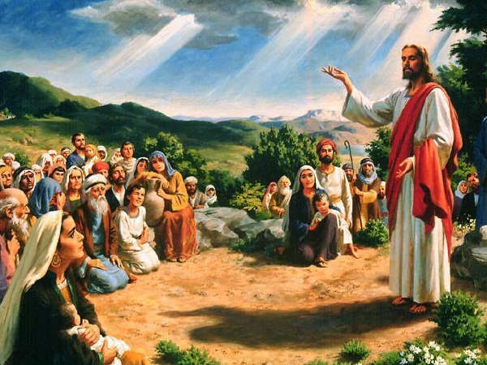
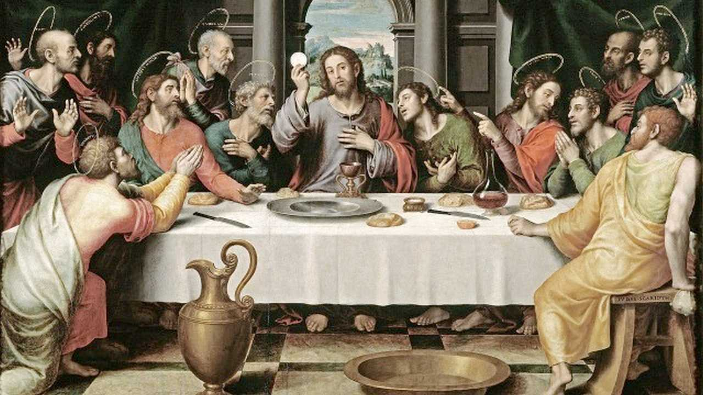
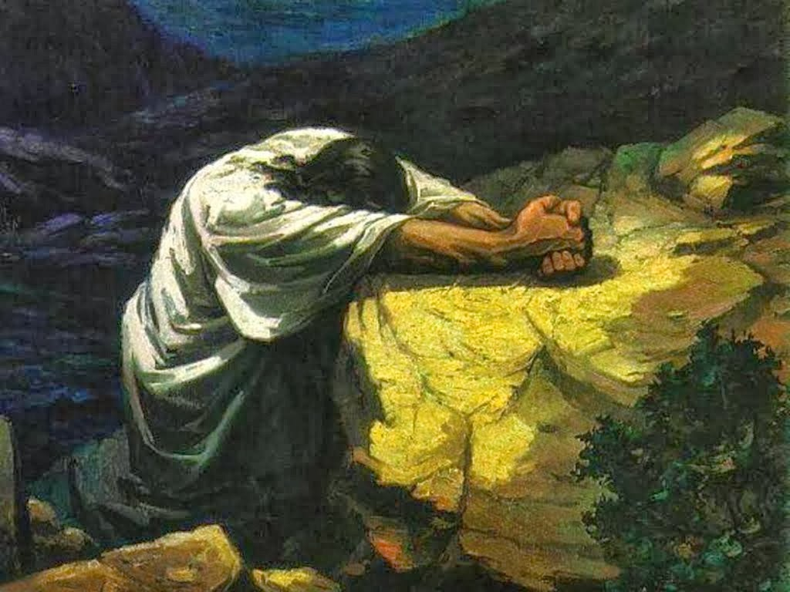
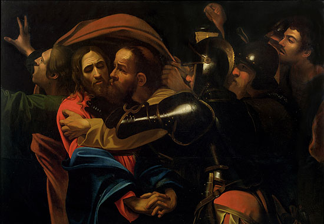
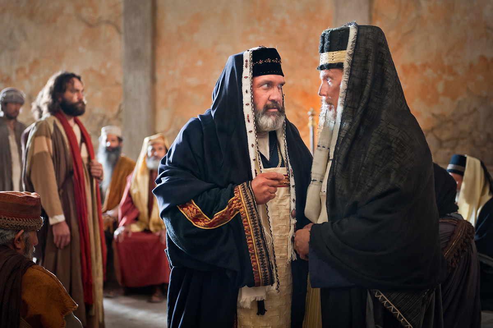
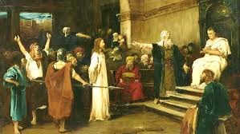
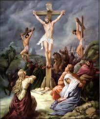
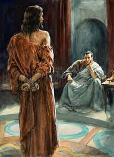
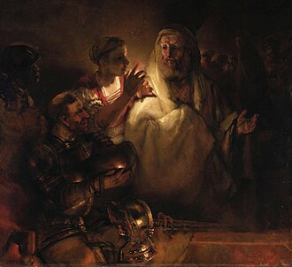
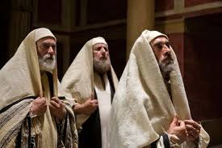

Presentasi Kelompok II
Sebuah perjalanan iman melalui penderitaan, pengorbanan, dan kasih yang tak terbatas
"Karena begitu besar kasih Allah akan dunia ini, sehingga Ia telah mengaruniakan Anak-Nya yang tunggal."
— Yohanes 3:16
Latar Belakang
Yesus dari Nazaret hidup di tengah masyarakat Yahudi yang penuh ketegangan politik dan keagamaan. Ia dituduh oleh para imam kepala dan pemimpin agama sebagai penghasut yang menyesatkan umat — seorang pemimpin sekte berbahaya yang mengancam tatanan dan otoritas keagamaan yang telah lama berdiri.
Lebih dari itu, Yesus secara terbuka menyatakan diri-Nya sebagai Anak Allah dan Raja Mesias — Sang Utusan yang dijanjikan Allah kepada Israel sejak zaman para nabi. Pengakuan ini dianggap sebagai penghujatan yang tak terampuni, dan menjadi dasar utama tuntutan hukuman mati yang diajukan kepada Pontius Pilatus.
"Engkau telah mengatakannya. Tetapi Aku berkata kepadamu: mulai sekarang kamu akan melihat Anak Manusia duduk di sebelah kanan Yang Mahakuasa."
— Matius 26:64
Kronologi
Yesus memulai pelayanan-Nya di Galilea — mengajar, menyembuhkan, dan memanggil para murid.

Selama kurang lebih tiga tahun, Yesus berkeliling Galilea dan Yudea. Ia mengajar dengan penuh kuasa, menyembuhkan orang sakit, mengusir roh jahat, dan membangkitkan orang mati. Mukjizat-mukjizat ini menarik perhatian besar dari rakyat, namun sekaligus menimbulkan ancaman bagi otoritas para imam kepala dan ahli Taurat yang merasa kedudukan mereka terancam. Popularitas Yesus yang terus tumbuh menjadi benih dari persekongkolan yang akhirnya berujung pada penangkapan-Nya.
Malam sebelum penangkapan-Nya, Yesus makan bersama kedua belas murid dan menetapkan Ekaristi.

Dalam ruang atas di Yerusalem, Yesus merayakan Paskah bersama para murid-Nya. Ia membasuh kaki mereka sebagai tanda kerendahan hati, lalu memecah roti dan menuangkan anggur — menyatakannya sebagai tubuh dan darah-Nya dalam perjanjian baru. Ia juga mengungkapkan bahwa salah satu dari mereka akan mengkhianati-Nya. Yudas Iskariot kemudian pergi ke luar malam itu untuk menyerahkan Yesus kepada para imam kepala seharga tiga puluh keping perak.
Yesus berdoa dalam pergumulan yang dalam, menyerahkan diri-Nya sepenuhnya pada kehendak Bapa.

Setelah perjamuan, Yesus pergi ke taman Getsemani di kaki Bukit Zaitun bersama Petrus, Yakobus, dan Yohanes. Ia meminta mereka berjaga, lalu menyingkir untuk berdoa seorang diri. Dalam doa-Nya yang penuh air mata, Ia berkata: "Ya Bapa, jikalau Engkau mau, ambillah cawan ini dari pada-Ku; tetapi bukanlah kehendak-Ku, melainkan kehendak-Mulah yang terjadi." Ketiga murid-Nya tertidur, meninggalkan Yesus berjuang sendirian dalam malam yang paling berat dalam hidup-Nya.
Yudas memimpin pasukan ke taman itu dan menyerahkan Yesus dengan sebuah ciuman.

Tengah malam, Yudas tiba bersama sepasukan prajurit Romawi dan penjaga Bait Allah yang bersenjata. Ia mendekati Yesus dan mencium-Nya — tanda yang telah disepakati untuk mengidentifikasi Yesus di tengah kegelapan. Petrus sempat menghunus pedang dan memotong telinga seorang hamba imam besar, namun Yesus menghentikannya dan menyembuhkan luka itu. Yesus menyerahkan diri-Nya dengan tenang, sementara semua murid melarikan diri meninggalkan-Nya.
Yesus diadili oleh Sanhedrin dan dinyatakan bersalah atas tuduhan penghujatan.

Yesus dibawa ke rumah Imam Besar Kayafas, di mana Mahkamah Agama (Sanhedrin) telah berkumpul. Para saksi palsu dihadirkan, namun kesaksian mereka saling bertentangan. Ketika Kayafas langsung bertanya, "Apakah Engkau Mesias, Anak Allah?" — Yesus menjawab dengan tegas: "Engkau telah mengatakannya." Mahkamah menganggap ini sebagai penghujatan dan menjatuhkan vonis hukuman mati. Namun karena berada di bawah kekuasaan Romawi, mereka tidak berwenang mengeksekusi hukuman tersebut sendiri.
Pilatus tidak menemukan kesalahan pada Yesus, namun menyerah pada tekanan massa.

Pagi harinya, Yesus diserahkan kepada Pontius Pilatus, gubernur Romawi. Pilatus menginterogasi-Nya dan berulang kali menyatakan bahwa ia tidak menemukan kesalahan apapun. Ia bahkan menawarkan untuk membebaskan Yesus sesuai kebiasaan Paskah, namun massa memilih Barabas. Di bawah tekanan yang semakin besar dan ancaman kerusuhan, Pilatus mencuci tangannya sebagai simbol pelepasan tanggung jawab, lalu menyerahkan Yesus untuk dicambuk dan disalibkan.
Tema
Sebelum sampai ke kayu salib, Yesus menanggung serangkaian penderitaan fisik dan batin yang luar biasa berat. Setiap peristiwa adalah bagian dari jalan pengorbanan-Nya bagi umat manusia.
Pilatus menawarkan kepada massa untuk membebaskan satu tahanan sesuai kebiasaan Paskah. Ia mengira mereka akan memilih Yesus — namun para imam kepala menghasut massa untuk meminta Barabas, seorang pemberontak dan pembunuh. Pilatus pun membebaskan Barabas dan menyerahkan Yesus untuk disesah dan disalibkan.
"Lalu Pilatus membebaskan Barabas bagi mereka, tetapi Yesus disesahnya dan diserahkannya untuk disalibkan." — Matius 27:26
Para prajurit menganyam mahkota dari duri dan menekannya ke kepala Yesus, lalu mengenakan jubah ungu dan mengejek-Nya sebagai "Raja orang Yahudi." Ini bukan sekadar siksaan fisik — ini adalah penghinaan terhadap martabat-Nya sebagai Raja segala raja.
"Mereka menganyam sebuah mahkota duri dan menaruhnya di atas kepala-Nya." — Matius 27:29
Dalam kondisi tubuh yang sudah sangat lemah akibat cambukan, Yesus dipaksa memikul salib-Nya sendiri menuju bukit Golgota — tempat eksekusi di luar tembok kota. Di tengah jalan, Simon dari Kirene dipaksa membantu memikul salib itu karena Yesus tidak lagi mampu.
"Sambil memikul salib-Nya, Ia pergi ke luar ke tempat yang bernama Tempat Tengkorak." — Yohanes 19:17
Sepanjang perjalanan sengsara-Nya, Yesus diolok oleh para prajurit, imam kepala, dan bahkan orang-orang yang lewat. Para murid yang paling dekat pun telah melarikan diri. Petrus menyangkal-Nya tiga kali. Yesus menanggung kesepian dan penghinaan yang paling dalam — sendirian di tengah kerumunan yang membenci-Nya.
"Semua murid itu meninggalkan Dia dan melarikan diri." — Matius 26:56
Tokoh-Tokoh
Setiap tokoh memainkan peran yang tak tergantikan dalam kisah sengsara dan wafat Yesus — dari pengorbanan, kesedihan, pengkhianatan, penyangkalan, hingga penghakiman.

Tokoh
Sang Putra Allah — Korban Sekaligus Penebus
Yesus adalah pusat dari seluruh kisah ini. Ia bukan sekadar korban kekerasan — Ia secara sadar memilih untuk menyerahkan diri-Nya. Dari taman Getsemani hingga kayu salib, Ia menanggung penghinaan, siksaan, dan kematian bukan karena terpaksa, melainkan karena kasih-Nya yang tak terbatas kepada manusia. Setiap langkah sengsara-Nya adalah tindakan penebusan yang disengaja.
"Tidak seorang pun mengambil nyawa-Ku dari pada-Ku, melainkan Aku memberikannya menurut kehendak-Ku sendiri." — Yohanes 10:18
Tokoh
Ibu yang Setia — Hadir Hingga Akhir
Di saat semua murid melarikan diri, Maria tetap berdiri di kaki salib Putranya. Ia menyaksikan setiap cambukan, setiap langkah Via Dolorosa, dan hembusan napas terakhir Yesus. Kehadirannya bukan sekadar kesedihan seorang ibu — ia adalah kesaksian iman yang tak tergoyahkan di tengah penderitaan yang paling dalam.
"Di dekat salib Yesus berdiri ibu-Nya dan saudara ibu-Nya." — Yohanes 19:25

Tokoh
Hakim yang Menyerah — Tahu Kebenaran, Memilih Diam
Pilatus tahu Yesus tidak bersalah. Ia berulang kali menyatakannya di hadapan massa. Namun ketakutan akan kerusuhan dan tekanan politik membuatnya memilih kekuasaan di atas kebenaran. Dengan mencuci tangannya, ia mencoba melepas tanggung jawab — namun justru tindakan itu yang mengabadikan namanya dalam sejarah sebagai orang yang menyerahkan Yesus untuk disalibkan.
"Pilatus membasuh tangannya di hadapan orang banyak dan berkata: Aku tidak bersalah atas darah orang ini." — Matius 27:24

Tokoh
Murid yang Jatuh — Penyangkalan dan Pertobatan
Petrus adalah murid yang paling bersemangat — ia berjanji tidak akan pernah meninggalkan Yesus. Namun dalam satu malam, ia menyangkal Yesus tiga kali di hadapan orang-orang biasa. Ketika ayam berkokok dan matanya bertemu dengan mata Yesus, ia keluar dan menangis dengan pedih. Kisah Petrus adalah kisah kita semua — jatuh, namun dipanggil kembali oleh kasih yang tidak pernah menyerah.
"Maka Petrus teringat akan perkataan Yesus... lalu ia pergi ke luar dan menangis dengan sedihnya." — Matius 26:75

Tokoh
Pemimpin Agama — Dalang di Balik Penghukuman
Kayafas adalah Imam Besar yang paling berkuasa di Yerusalem. Ia melihat Yesus sebagai ancaman nyata terhadap otoritas keagamaan dan stabilitas politik. Ia yang mengorganisir persidangan malam itu, menghadirkan saksi-saksi palsu, dan mendesak Pilatus untuk menjatuhkan hukuman mati. Dengan ironi yang dalam, ia tanpa sadar menggenapi nubuat bahwa satu orang harus mati demi menyelamatkan seluruh bangsa.
"Adalah lebih berguna bagimu jika satu orang mati untuk bangsa, dari pada seluruh bangsa itu binasa." — Yohanes 11:50
Deskripsi